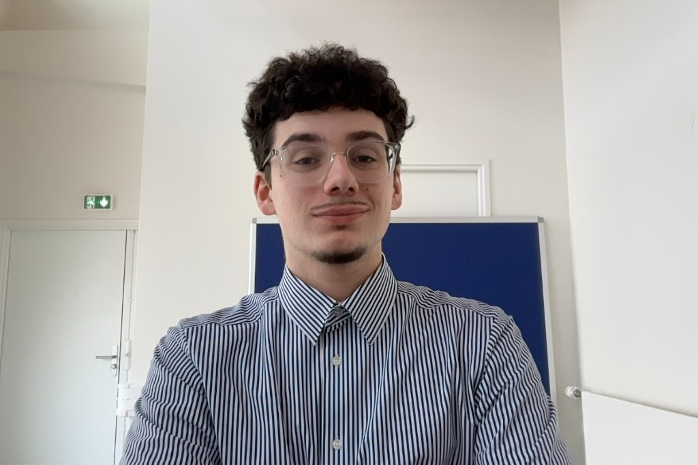

Disponibilité
Recherche d'alternance à partir de septembre 2026.
Profil orienté web, design et audiovisuel, avec une approche centrée utilisateur et une forte appétence pour les projets concrets.

Actuellement, étudiant en 3ème année de BUT MMI (Métiers du Multimédia et de l'Internet), je cherche une alternance à partir de la rentrée de septembre 2026, dans les domaines de la communication visuelle, du web et de la création de contenu audiovisuel pour continuer mes études avec un master.
Je développe des expériences numériques lisibles, esthétiques et utiles, en reliant conception, développement et narration visuelle.
Découvre mes réalisations dans mon portfolio ou consulte mon CV.
Recherche d'alternance à partir de septembre 2026.
Développement web, design UX/UI et création audiovisuelle.
Travail en équipe, gestion de projet Agile et documentation claire.
DGDDI
Analyse du site web (cas d'usages, audiences, rapport). Maquettage de la nouvelle version aux normes (Drupal, Sites faciles, Figma). Intégration de scripts JS et déploiement de MATOMO. Gestion de projet (feuilles de route, ateliers, méthode Agile, sprints). Documentation et centralisation des rapports.
DGDDI
Audit ergonomique, personas et parcours utilisateurs. Maquettage de la refonte globale du site sur Figma (haute fidélité). Programmation et intégration de la nouvelle page d'accueil. Pilotage du projet en Agile (feuilles de route, organigrammes, planning). Présentations hebdomadaires et mensuelles.
Federation Studios
Conception d'un site de phishing simulé pour la sensibilisation à la cybersécurité. Développement Fullstack (PHP/SQL/JS), système d'interception de données préventif. Rédaction et diffusion des annonces internes. Création de supports graphiques (bannière) pour le lancement sur X (Twitter). Initiation au montage et à la colorimétrie sur Avid Media Composer.
Cour nationale du droit d'asile (CNDA)
Contrôle de la conformité des minutiers et signalement des anomalies. Transfert et sécurisation des dossiers physiques. Gestion du flux documentaire : tri, numérisation et dispatching du courrier entrant. Création de modèles Excel ergonomiques pour l'équipe.
IF Architectes
Utilisation d'Autocad et Sketchup pour la modélisation en architecture intérieure. Création de plans d'architectes.
Développement, design, audiovisuel et communication.
Université Gustave Eiffel · Meaux (77)
Parcours développement web, design, audiovisuel et communication.
Lycée Edouard Branly · Nogent-sur-Marne (94)
Spécialités mathématiques et sciences économiques et sociales.